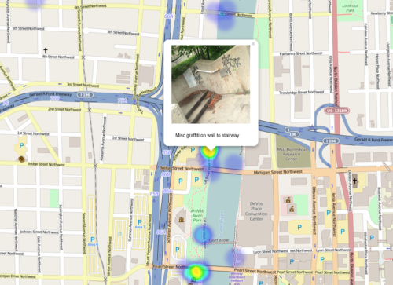

<a id="js-maps---is-a-simple-collection-of-javascript-maps-to-illustrate-the-power-of-visually-displaying-information-on-map" class="anchor" href="#js-maps---is-a-simple-collection-of-javascript-maps-to-illustrate-the-power-of-visually-displaying-information-on-map" aria-hidden="true"><span class="octicon octicon-link"></span></a>JS Maps - is a simple collection of JavaScript Maps to illustrate the power of visually displaying information on map.</h3>
<b class="anchor">Graffiti Heat Map</b>
<p>A City of Grand Rapids Open 311 data Map using LeafLet JavaScript library and Heatmap plugin</p>
<a href="graffiti_open311_map.html"></img></a>